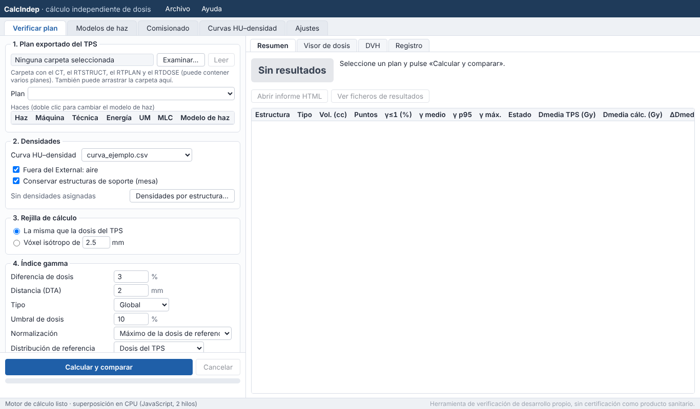
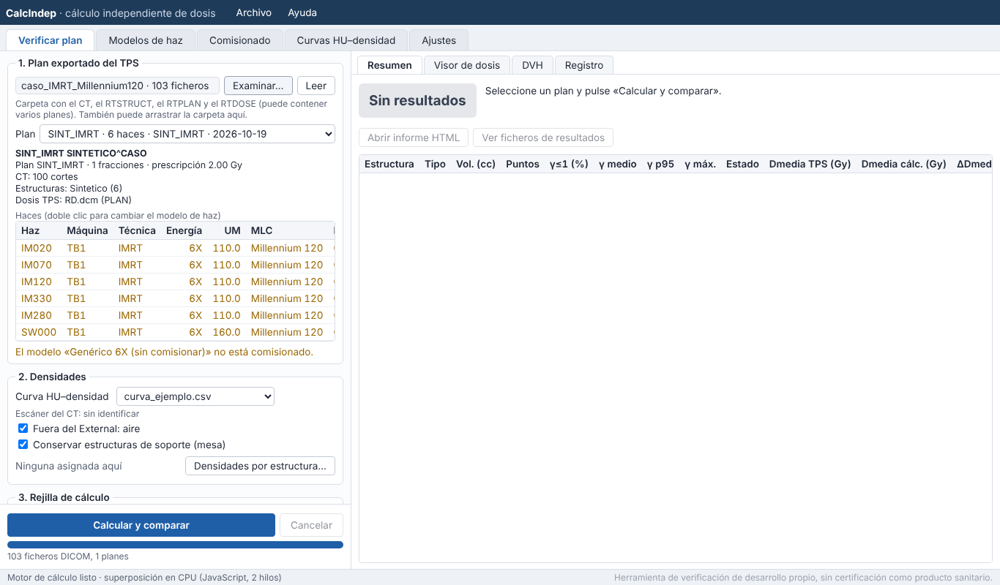
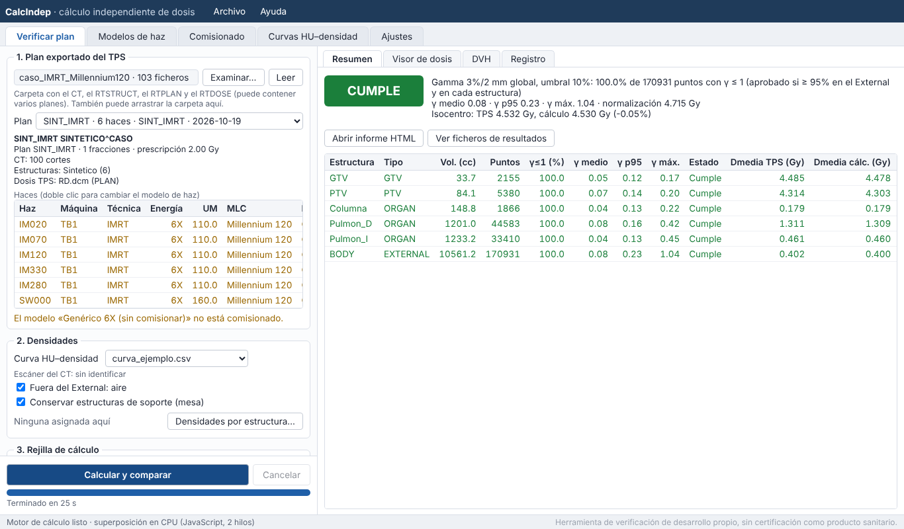
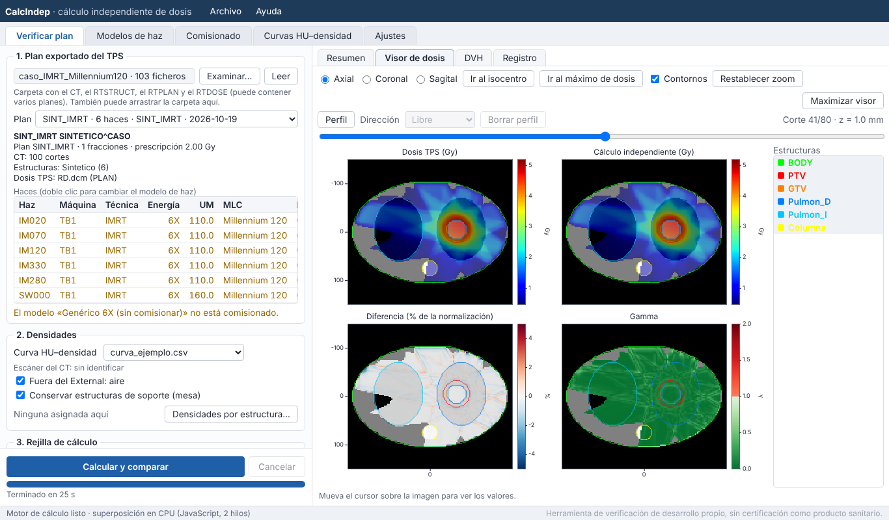
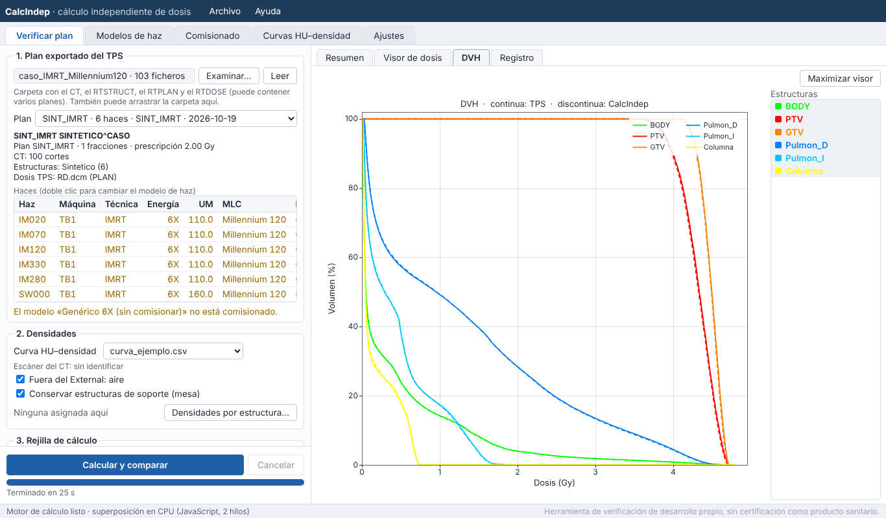
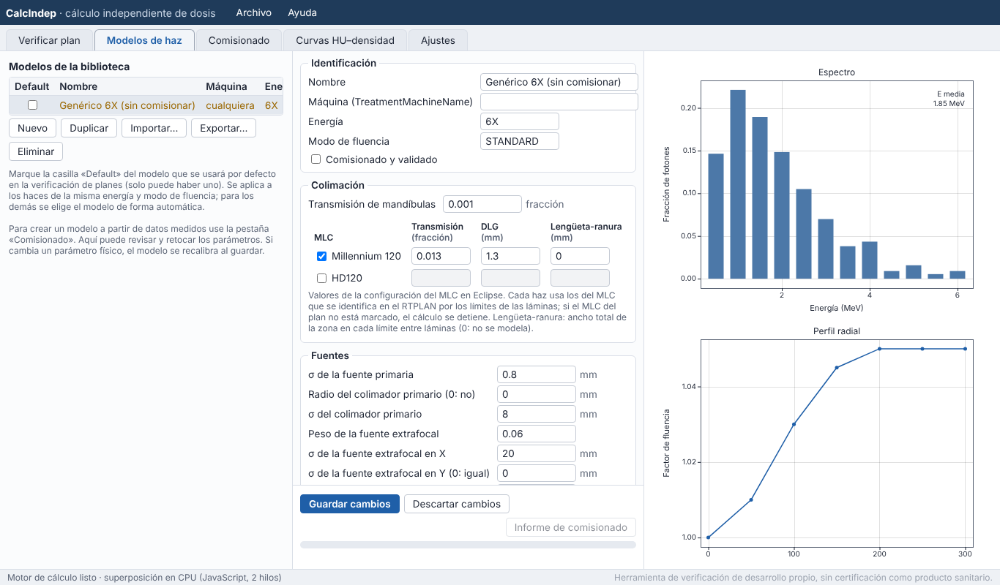
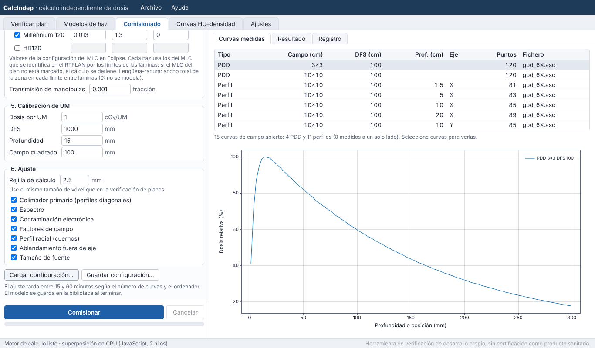
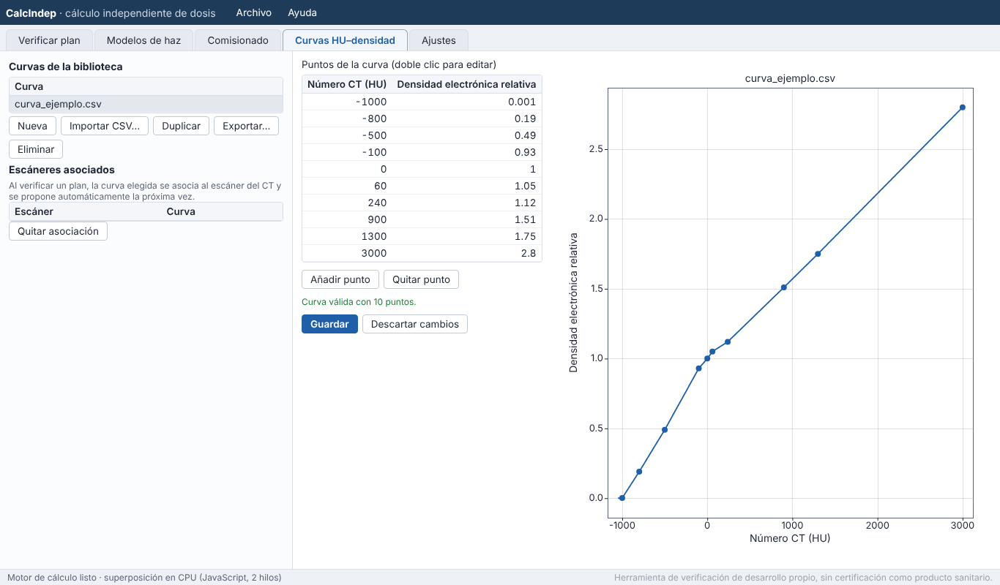
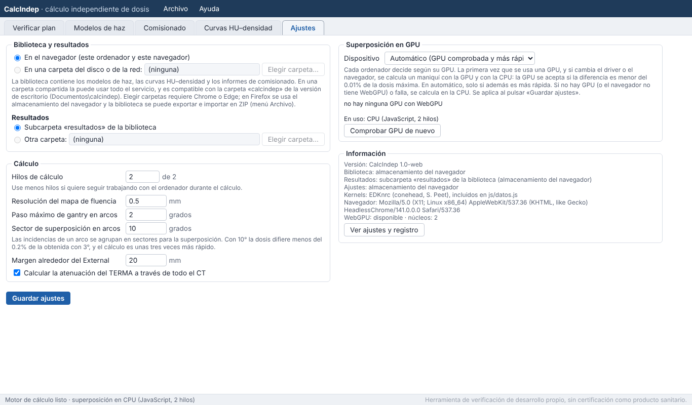

CalcIndep · Manual de usuario
1. Qué es CalcIndep
CalcIndep recalcula la dosis de un plan de radioterapia externa con fotones de forma independiente del planificador y compara las dos distribuciones. Sirve como control de calidad específico del paciente antes del tratamiento.
Admite 3D-CRT, IMRT (step-and-shoot y ventana deslizante) y VMAT con los MLC Millennium 120 y HD120 de Varian.
Esta es la versión para navegador. Usa los mismos algoritmos que la versión de escritorio (programada en Python), escritos en JavaScript, y produce los mismos resultados: en los casos de prueba, la dosis calculada difiere de la de la versión de escritorio en menos del 0.001% de la dosis máxima y el resultado gamma es idéntico (anexo B).
Qué no hace
- No modela cuñas físicas, cuñas dinámicas (EDW), bloques ni conos de radiocirugía. Si el plan los tiene, el cálculo se hace sin ellos y el informe lo avisa.
- Los kernels incluidos llegan a 6 MeV: sirven para 6X y 6FFF.
- No tiene la certificación de producto sanitario. La responsabilidad de su validación y de su uso es del centro que lo emplea.
2. Puesta en marcha
Requisitos
| Navegador | Google Chrome 109 o posterior, Microsoft Edge 109 o posterior, o Mozilla Firefox 115 o posterior. En Windows 7 sirven las últimas versiones publicadas para ese sistema: Chrome 109 y Firefox 115 ESR. |
|---|---|
| Sistema | Windows 7, 10 u 11 (o cualquier sistema con uno de los navegadores anteriores). |
| Instalación | Ninguna. No hace falta conexión a internet ni permisos de administrador. Los datos no salen del ordenador. |
| Memoria | Se recomiendan 8 GB de RAM. Un plan VMAT con matriz de dosis de 2.5 mm usa unos 1–2 GB en el navegador. |
| GPU | Opcional. Si el navegador tiene WebGPU (Chrome o Edge 113 o posterior en Windows 10/11) y la tarjeta gráfica supera la comprobación de precisión, la superposición se hace en la GPU (apartado Superposición en GPU). En Windows 7 el cálculo se hace siempre en la CPU. Las versiones recientes de Firefox también tienen WebGPU, pero en las pruebas fue más lento que la CPU (en un portátil con Intel gen-9, 0.6 veces la velocidad de la CPU frente a 11.5 veces en Chrome); el modo automático lo detecta y calcula en la CPU. Para usar la GPU, use Chrome o Edge. |
Contenido de la carpeta
| Fichero o carpeta | Para qué sirve |
|---|---|
CalcIndep.html | El programa. Se abre con doble clic. |
js\ | Código del programa, kernels EDKnrc, modelo genérico 6X y curvas de ejemplo (js\datos.js). |
css\ | Estilos de la interfaz. |
manual\ | Este manual (tecla F1). |
test_synthetic_plans\ | Dos planes sintéticos (3D y VMAT) con los resultados esperados, para comprobar el programa en cada ordenador. |
README.md, README.en.md | Descripción del programa, en español y en inglés. |
LICENSE, THIRD_PARTY_NOTICES.txt | Licencia del programa (MIT) y licencias de los componentes de terceros. |
Las carpetas js, css y manual tienen que estar junto a CalcIndep.html. La carpeta
puede copiarse a cualquier sitio: el disco local, una memoria USB o una carpeta de red.
Abrir el programa
- Copie la carpeta del programa al ordenador o a una carpeta de red.
- Haga doble clic en
CalcIndep.html. Se abre en el navegador predeterminado. Para usar otro navegador, haga clic derecho → Abrir con, o arrastre el fichero a una ventana del navegador. - En la barra inferior se lee «Preparando el motor de cálculo…» y, en unos segundos, «Motor de cálculo listo · superposición en CPU» (o en GPU).
Puede crear un acceso directo al fichero en el escritorio o guardarlo en los marcadores del navegador. La primera vez se crea la biblioteca con el modelo genérico 6X y la curva de ejemplo.
El navegador puede pedir confirmación al cerrar la pestaña si hay un cálculo en curso. Si cierra la pestaña, el cálculo se pierde.
Dónde se guardan los datos
Los modelos de haz, las curvas HU–densidad, los comisionados y los resultados forman la biblioteca. Hay dos opciones (pestaña Ajustes):
| Opción | Descripción |
|---|---|
| En el navegador (por defecto) | Los datos se guardan en el almacenamiento interno del navegador, en ese ordenador y para ese usuario de Windows. Funciona en todos los navegadores. Chrome y Firefox tienen almacenamientos separados. Si se borran los datos de navegación («cookies y otros datos de sitios»), se borra la biblioteca: guarde copias con Archivo → Exportar la biblioteca (ZIP). Los resultados se pueden descargar con Archivo → Resultados guardados. |
| En una carpeta del disco o de la red | Solo en Chrome y Edge. Los ficheros se escriben en la carpeta
elegida con la misma estructura que la versión de escritorio (modelos, curvas_hu,
comisionado, resultados). En una carpeta compartida, todo el servicio usa los mismos modelos y
curvas. Al abrir el programa, el navegador pide permiso para usar la carpeta: pulse Dar permiso en la franja
amarilla superior. |
Los ajustes (opciones de cálculo, criterio gamma, asociación de curvas y escáneres, resultado de la comprobación de la GPU) se guardan en el navegador de cada ordenador.
Relación con la versión de escritorio
- Los modelos de haz (JSON), las curvas (CSV) y las configuraciones de comisionado son los mismos ficheros en las dos
versiones. La carpeta
Documentos\calcindepde la versión de escritorio puede usarse como biblioteca de la versión web (en Chrome o Edge), o importarse en ZIP. - Los resultados (
resumen.json, RTDOSE, informe HTML) tienen el mismo formato. El campoversionderesumen.jsonindica1.0-web.
3. Primeros pasos
La ventana principal

| Pestaña | Para qué sirve |
|---|---|
| Verificar plan | Calcular un plan y compararlo con la dosis del planificador. Es la que se usa a diario. |
| Modelos de haz | Revisar, editar, importar y elegir el modelo por defecto. |
| Comisionado | Crear un modelo de haz a partir de las medidas de la máquina. |
| Curvas HU–densidad | Crear y editar curvas y asociarlas a los escáneres CT. |
| Ajustes | Biblioteca, opciones de cálculo y uso de la GPU. |
Menú Archivo: ver y descargar los ficheros de la biblioteca y los resultados guardados, y exportar o importar la
biblioteca completa en un ZIP (para copias de seguridad o para pasarla a otro ordenador o navegador).
Menú Ayuda: este manual (tecla F1), los ajustes y el registro de errores (para enviarlos si hay
un problema) y Acerca de CalcIndep, con la versión.
La barra inferior muestra el estado del motor de cálculo y el dispositivo que hace la superposición (CPU o GPU).
Antes de verificar planes clínicos
El modelo genérico 6X y la curva de ejemplo solo sirven para probar el programa. Antes del uso clínico:
- Curva HU–densidad de cada CT de simulación (capítulo 7).
- Modelo de haz comisionado para cada máquina, energía y modo de fluencia (capítulo 6), con los parámetros de cada MLC que use la máquina. Si ya tiene modelos comisionados con la versión de escritorio, impórtelos.
- Validación del conjunto: campos sencillos en agua frente a medidas, y planes clínicos de cada técnica y localización frente al planificador y frente a la verificación experimental.
- Criterio de aceptación del centro: criterio gamma, umbral y porcentaje de aprobación, y qué hacer cuando un plan no cumple.
Mientras un plan use un modelo sin comisionar, cada resultado lleva el aviso «Modelo de haz no comisionado: resultado no válido para uso clínico».
4. Verificar un plan
Exportar el plan desde el planificador
Exporte a una carpeta los cuatro objetos DICOM del plan: CT, RTSTRUCT, RTPLAN y RTDOSE. La carpeta puede contener varios planes y pacientes; se elige uno en el programa.
- Exporte la dosis del plan (DoseSummationType PLAN). Si solo hay dosis por haz, se suman.
- La matriz de dosis del planificador define la rejilla de cálculo. El TERMA se traza a través de todo el CT, así que la atenuación es correcta aunque la matriz no cubra todo el paciente.
- El conjunto de estructuras debe tener una estructura de tipo EXTERNAL. Sin ella, el cálculo y la gamma usan toda la rejilla.
- Si el RTSTRUCT no incluye la densidad asignada a la mesa, asígnela en el paso 2.
Pasos

1. Plan exportado del TPS. Pulse Examinar… y elija la carpeta, o arrastre la carpeta sobre el apartado. El navegador pide confirmación para leer la carpeta («¿Subir N archivos?» en Chrome): los ficheros no se envían a ningún sitio, solo se leen en el ordenador. El programa lee las cabeceras DICOM y llena la lista Plan (el más reciente primero). Debajo se ven el paciente, la prescripción, el número de cortes del CT, el conjunto de estructuras, la dosis del TPS y, en rojo, lo que falte. Leer vuelve a leer la carpeta (por ejemplo, después de exportar otro plan a ella).
La tabla Haces muestra cada haz con su máquina, técnica, energía, UM, MLC y modelo de haz. El modelo se elige así:
- el modelo marcado como Default, si es de la misma energía y modo de fluencia;
- si no, el último elegido para esa máquina y energía;
- si no, un modelo de la misma máquina, energía y modo; si no hay, un modelo genérico (sin máquina) de esa energía.
Con doble clic (o clic derecho) en un haz se cambia el modelo de todos los haces de esa máquina y energía, y la elección se recuerda. Los textos en naranja son avisos (modelo sin comisionar, de otra máquina); en rojo, errores que impiden calcular (haz sin modelo, MLC no reconocido o sin parámetros en el modelo).
2. Densidades. Elija la Curva HU–densidad. La curva queda asociada al escáner del CT y se propone sola en los planes siguientes del mismo escáner.
- Fuera del External: aire (recomendado). Todo lo que queda fuera del External se trata como aire, salvo las estructuras de soporte.
- Conservar estructuras de soporte (mesa): las estructuras de tipo SUPPORT mantienen su densidad.
- Densidades por estructura…: asigna a una estructura un valor en HU o en densidad electrónica relativa (mesa, bolus, artefactos de contraste o de prótesis). Las densidades asignadas en el RTSTRUCT se respetan sin hacer nada.
3. Rejilla de cálculo. Por defecto, La misma que la dosis del TPS. La opción Vóxel isótropo de … mm permite una rejilla más gruesa (más rápida) o más fina.
4. Índice gamma.
| Campo | Significado | Valor inicial |
|---|---|---|
| Diferencia de dosis | Tolerancia de dosis del criterio gamma. | 3% |
| Distancia (DTA) | Tolerancia de distancia. | 2 mm |
| Tipo | Global (% de la normalización) o local (% de la dosis en cada punto). | Global |
| Umbral de dosis | Solo se evalúan los puntos por encima de este % de la normalización. | 10% |
| Normalización | Máximo de la dosis de referencia o prescripción del plan. | Máximo |
| Distribución de referencia | Dosis del TPS o cálculo independiente. | Dosis del TPS |
| Aprobado si γ ≤ 1 en al menos | Porcentaje mínimo de puntos con γ ≤ 1. | 95% |
El programa recuerda los últimos valores usados.
5. Resultados. Muestra dónde se guardarán. Deje marcada Guardar la dosis calculada como RTDOSE si quiere importarla en Eclipse.
Pulse Calcular y comparar. Debajo del botón se ven el avance y el tiempo restante estimado. Cancelar detiene el cálculo al terminar el paso en curso. El detalle de cada etapa aparece en la pestaña Registro. Mientras calcula, puede usar otras pestañas del navegador; si la pestaña de CalcIndep queda en segundo plano, el cálculo continúa.
Resultado de la verificación

Arriba se muestra el veredicto (CUMPLE o NO CUMPLE), el resultado gamma en el External, la normalización y la dosis en el isocentro de los dos cálculos. El recuadro amarillo recoge los avisos, que conviene leer siempre.
| Columna | Contenido |
|---|---|
| Vol. (cc), Puntos | Volumen de la estructura y número de puntos evaluados (por encima del umbral). |
| γ≤1 (%) | Porcentaje de puntos que pasan el criterio gamma. |
| γ medio, γ p95, γ máx. | Media, percentil 95 y máximo de γ en la estructura. |
| Estado | Cumple o No cumple. No cumple (no cuenta): no alcanza el umbral, pero es una estructura no anatómica y no interviene en el veredicto. Sin puntos: menos de 10 puntos evaluados. |
| Dmedia TPS, Dmedia cálc. | Dosis media con cada cálculo (Gy). |
| ΔDmedia, ΔD95, ΔD2, ΔDmáx | Diferencias del cálculo independiente respecto al TPS (%). |
Abrir informe HTML abre el informe en una pestaña nueva (se puede imprimir o guardar como PDF desde el navegador). Ver ficheros de resultados muestra los ficheros de esa verificación para descargarlos.
Visor de dosis y DVH

- Axial, Coronal, Sagital cambian el plano. La barra deslizante cambia de corte; Ir al isocentro e Ir al máximo de dosis llevan a esos puntos.
- Al pasar el cursor sobre una imagen se leen los valores en la parte inferior.
- Contornos muestra u oculta los contornos; en la lista de estructuras de la derecha se eligen cuáles.
- Zoom: rueda del ratón sobre la imagen. Para desplazar la imagen ampliada, arrastre con el botón derecho o con Mayúsculas + botón izquierdo. Restablecer zoom recupera la vista completa.
- Perfil: con la dirección Libre se arrastra una línea sobre cualquiera de las imágenes; con Horizontal o Vertical basta un clic. Se muestran la dosis del TPS y la de CalcIndep a lo largo de la línea y su diferencia. Borrar perfil la quita.
- Maximizar visor oculta el panel izquierdo para ver las imágenes más grandes.

Ficheros de cada verificación
Cada verificación se guarda en una carpeta propia dentro de resultados, con el nombre
<ID paciente>_<plan>_<fecha>_<hora>:
| Fichero | Contenido |
|---|---|
informe_….html | Informe autocontenido (se abre con cualquier navegador y se puede imprimir o guardar como PDF). |
RD_calculo_independiente.dcm | Dosis calculada en formato RTDOSE. |
resumen.json | Datos para trazabilidad: versión del programa, criterio, resultados por estructura, modelos, curva, opciones, avisos, ficheros de entrada y dispositivo de cálculo. |
Con la biblioteca en el navegador, los resultados se ven en Archivo → Resultados guardados, donde se pueden abrir, descargar (uno a uno o la carpeta entera en ZIP) y eliminar.
5. Modelos de haz

A la izquierda está la lista de modelos de la biblioteca, con su máquina, energía y si están comisionados.
- Default: marca el modelo que se usa por defecto en las verificaciones. Solo puede haber uno; un segundo clic lo desmarca.
- Nuevo, Duplicar, Importar…, Exportar… y Eliminar gestionan la lista. Importar… admite los ficheros JSON de la versión de escritorio.
En el centro están los parámetros del modelo seleccionado:
- Identificación: nombre, máquina (igual que
TreatmentMachineNameen el plan), energía, modo de fluencia y la casilla Comisionado y validado. - Colimación: transmisión de mandíbulas y, para cada MLC (Millennium 120, HD120), transmisión, DLG y ancho de la zona lengüeta-ranura. Son los valores de la configuración de Eclipse; no se ajustan. Si un plan usa un MLC que no está marcado en el modelo, el cálculo no empieza.
- Fuentes, Espectro y contaminación electrónica y Calibración de UM: parámetros físicos que normalmente fija el comisionado.
Guardar cambios guarda el modelo. Si se ha cambiado un parámetro físico, el modelo se recalibra al guardar. Recalibrar repite la calibración de las UM con la rejilla indicada. Informe de comisionado abre el informe con el que se creó el modelo. A la derecha se ven el espectro y el perfil radial de fluencia.
6. Comisionado

El comisionado ajusta un modelo de haz a las medidas de una máquina. Lee directamente los datos que se cargan en Eclipse.
- Máquina y energía. Nombre del modelo, máquina (exactamente como
TreatmentMachineNameen el plan), energía y modo de fluencia. - Curvas medidas. Añadir w2CAD… lee los ficheros de los golden beam data de Varian. Añadir CSV… lee curvas de dos columnas (posición o profundidad, valor); se piden el campo, la DFS, la profundidad y el eje. Se recomiendan PDD de 3×3, 10×10, 20×20 y 40×40 cm y perfiles X, Y y diagonales a varias profundidades. Las curvas de cuña se descartan. La pestaña Curvas medidas de la derecha las muestra.
- Factores de campo. Tabla 2D de Varian (por ejemplo
06X_00.txt) o CSV con columnascampo_x_mm, campo_y_mm, factor, con su DFS, profundidad y campo de referencia. - Colimación. Transmisión, DLG y ancho lengüeta-ranura de cada MLC, y transmisión de mandíbulas, tal como están en la configuración de Eclipse.
- Calibración de UM. Dosis por UM en las condiciones de referencia (DFS, profundidad, campo).
- Ajuste. Rejilla de cálculo (use la misma que en las verificaciones) y etapas del ajuste.
Pulse Comisionar. El ajuste tarda entre 15 y 90 minutos según el número de curvas, la rejilla y el ordenador. No cierre la pestaña mientras tanto. Al terminar, el modelo queda en la biblioteca y la pestaña Resultado muestra la comparación con cada curva; Abrir informe de comisionado abre el informe completo y Ver el modelo lo muestra en la pestaña de modelos.
Guardar configuración… descarga un JSON con todo lo introducido para repetir el comisionado más adelante. Cargar configuración… lo recupera: seleccione a la vez el JSON y los ficheros de datos que cita (w2CAD, CSV y factores de campo). Las configuraciones de la versión de escritorio también sirven. Revise el informe de comisionado antes de marcar el modelo como comisionado y validado.
7. Curvas HU–densidad

Cada curva convierte el número CT (HU) en densidad electrónica relativa al agua. Use la curva medida en su CT con un maniquí de calibración, la misma que tiene configurada en el planificador.
- Nueva, Importar CSV…, Duplicar, Exportar… y Eliminar gestionan las curvas. El CSV tiene dos columnas con
cabecera
HU,REDy punto como separador decimal. - Doble clic en un punto de la tabla para editarlo; Añadir punto y Quitar punto modifican la tabla. La gráfica se actualiza y, debajo, se indica si la curva es válida. Guardar la guarda.
- Escáneres asociados: al verificar un plan, la curva elegida se asocia al escáner del CT (nombre de la estación, fabricante y modelo) y se propone sola en los planes siguientes. Quitar asociación la elimina.
8. Ajustes

Los cambios se aplican al pulsar Guardar ajustes.
| Ajuste | Significado | Por defecto |
|---|---|---|
| Biblioteca | En el navegador o en una carpeta (apartado Dónde se guardan los datos). | navegador |
| Resultados | Subcarpeta resultados de la biblioteca u otra carpeta (Chrome y Edge). | biblioteca |
| Hilos de cálculo | Núcleos que usa el cálculo. Use menos si quiere seguir trabajando con el ordenador mientras calcula. | todos |
| Resolución del mapa de fluencia | Tamaño de píxel de la fluencia en el plano del isocentro. | 0.5 mm |
| Paso máximo de gantry en arcos | Los arcos se dividen en incidencias de como máximo este ángulo. | 2° |
| Sector de superposición en arcos | Las incidencias se agrupan en sectores para la superposición. Con 10° la dosis difiere menos del 0.2% de la obtenida con 3°, con un tiempo unas 3 veces menor. | 10° |
| Margen alrededor del External | Margen de la región de cálculo. | 20 mm |
| Atenuación del TERMA a través de todo el CT | Traza los rayos por todo el CT, no solo por la matriz de dosis. | activado |
Se recomienda no cambiar las opciones de cálculo una vez validado el sistema.
Superposición en GPU
La GPU se usa a través de WebGPU, disponible en Chrome y Edge 113 o posterior en Windows 10 y 11. No hay que instalar nada. El desplegable Dispositivo tiene estas opciones:
- Automático (recomendado): usa la GPU solo si ha superado la comprobación de precisión y es al menos 1.2 veces más rápida que la CPU.
- Solo CPU.
- Una GPU concreta: se usa si supera la comprobación de precisión, aunque no sea más rápida.
La comprobación se hace sola la primera vez que se usa una GPU, y de nuevo si cambian el modelo de GPU, el driver, el navegador o el código: se calcula un maniquí de tórax con la GPU y con la CPU, y la GPU se acepta si la diferencia máxima es menor del 0.01% de la dosis máxima. Comprobar GPU de nuevo la repite. Si la GPU falla durante un cálculo, ese cálculo y los siguientes continúan en la CPU y el resultado lleva un aviso. El informe indica siempre dónde se hizo la superposición.
En Windows 7 (Chrome 109, Firefox 115) no hay WebGPU: el cálculo se hace en la CPU con todos los núcleos. Firefox reciente sí tiene WebGPU, pero su implementación fue mucho más lenta que la de Chrome con la misma GPU (en un portátil con Intel gen-9, 0.6 veces la velocidad de la CPU en Firefox frente a 11.5 veces en Chrome). La comprobación automática lo detecta y calcula en la CPU. Para aprovechar la GPU, use Chrome o Edge. El resultado de la comprobación es distinto en cada navegador, porque cada uno tiene su propio almacenamiento.
9. Solución de problemas
Si el programa da un error, abra Ayuda → Ajustes y registro de errores, descargue el registro y envíelo junto con la descripción del problema.
- La página se queda en blanco o en «Cargando el programa…».
- Compruebe que las carpetas
jsycssestán junto aCalcIndep.htmly que el navegador es compatible (Chrome o Edge 109+, Firefox 115+). Internet Explorer no sirve. - «Este navegador no permite guardar datos de forma permanente…»
- El navegador no deja guardar la biblioteca (por ejemplo, en una ventana privada, o por una política del hospital). Use una ventana normal o, en Chrome o Edge, elija una carpeta para la biblioteca en Ajustes. Mientras tanto, descargue los resultados antes de cerrar.
- Al abrir el programa aparece «El navegador necesita su permiso para usar la carpeta…».
- Es normal con la biblioteca en una carpeta: por seguridad, Chrome y Edge piden permiso en cada sesión. Pulse Dar permiso.
- No puedo elegir una carpeta para la biblioteca.
- Esa opción requiere Chrome o Edge. En Firefox la biblioteca está en el navegador; use Archivo → Exportar/Importar la biblioteca para copiarla.
- He perdido los modelos al cambiar de navegador u ordenador.
- Cada navegador tiene su propio almacenamiento. Exporte la biblioteca en ZIP desde el navegador anterior e impórtela en el nuevo, o use una carpeta compartida (Chrome/Edge).
- El cálculo es lento.
- Compruebe en Ajustes que Hilos de cálculo usa todos los núcleos y que la pestaña de CalcIndep no es la única abierta en un navegador con ahorro de energía extremo. En Windows 10/11 use Chrome o Edge actualizados para aprovechar la GPU. Una rejilla isótropa de 2.5 o 3 mm es más rápida que una de 1–2 mm.
- «Sin memoria» o la pestaña se cierra durante el cálculo.
- Cierre otras pestañas, reduzca los hilos de cálculo o use una rejilla más gruesa. En Windows de 32 bits el navegador dispone de muy poca memoria; use un ordenador de 64 bits.
- «Haces sin modelo de haz» o «— sin modelo —» en la tabla de haces.
- No hay ningún modelo de esa energía y modo de fluencia. Haga doble clic en el haz y elija un modelo, o cree uno en Comisionado.
- «El modelo … no tiene parámetros del MLC …».
- El plan usa un MLC que el modelo no tiene marcado. En Modelos de haz → Colimación, marque ese MLC, introduzca su transmisión, DLG y ancho lengüeta-ranura y pulse Guardar cambios.
- «Faltan objetos DICOM del plan».
- En la carpeta falta el CT, el RTSTRUCT o el RTDOSE del plan elegido, o no están enlazados entre sí. Exporte de nuevo los cuatro objetos juntos.
- «El plan no tiene dosis de prescripción».
- Se ha elegido la normalización a la prescripción y el RTPLAN no la incluye. Use la normalización al máximo.
- Diferencias grandes en zonas concretas.
- Revise la mesa y los objetos de alta densidad (asígneles densidad en Densidades por estructura…), que la curva HU–densidad es la del escáner correcto, y los avisos del resumen (cuñas, bloques o MLC no modelados).
- El navegador bloquea el informe o el manual.
- Permita las ventanas emergentes para esta página, o descargue el informe desde Ver ficheros de resultados.
10. Limitaciones conocidas
- Energías: los kernels incluidos llegan a 6 MeV (6X y 6FFF).
- Accesorios: sin modelo de cuñas físicas, cuñas dinámicas (EDW), bloques ni conos de radiocirugía. El plan se calcula sin ellos y el informe lo avisa.
- MLC: solo Millennium 120 y HD120; los MLC de doble capa no se admiten. DLG constante, una sola transmisión por MLC y franja lengüeta-ranura de ancho fijo.
- Fuente extrafocal: tiene anchuras distintas en X e Y, pero no modela por separado la posición de cada mandíbula.
- Kernel: no varía con el endurecimiento del espectro en profundidad ni con el ablandamiento fuera de eje.
- Medios: se tratan como agua con densidad electrónica escalada; la dosis calculada es aproximadamente dosis en agua dentro del medio.
- Calibración: depende ligeramente del tamaño de vóxel; el modelo se recalibra solo si la rejilla del plan difiere más de 0.6 mm de la de calibración.
- Modelos antiguos: los modelos guardados antes de algunas opciones se cargan sin ellas para que calculen igual que cuando se validaron.
- Navegador: el cálculo depende de que la pestaña siga abierta. Sin GPU, un VMAT de dos arcos tarda de 2 a 10 minutos según el ordenador.
- Validación: la validación frente a medidas y frente al planificador con planes reales debe hacerla cada centro.
Anexo A. Descripción del cálculo
Densidades. El CT se convierte a densidad electrónica relativa con la curva HU–RED y se promedia en cada vóxel de la rejilla de
cálculo (supermuestreo 3×3×3). Fuera del External se asigna aire, salvo las estructuras de tipo SUPPORT. Se respetan las densidades
asignadas en el RTSTRUCT (REL_ELEC_DENSITY).
Fluencia. Para cada par de puntos de control se calcula de forma analítica la fracción de UM durante la que cada punto del plano del isocentro está descubierto por mandíbulas y láminas (movimiento lineal entre puntos de control). Se incluyen la transmisión del MLC, la DLG, la transmisión de mandíbulas, el efecto lengüeta-ranura, el tamaño de la fuente primaria, la fuente extrafocal y el perfil radial de fluencia. Los arcos se dividen en incidencias de como máximo 2°. El tipo de MLC se identifica por los límites de las láminas del RTPLAN.
TERMA. Se calcula para cada incidencia con trazado de rayos divergentes desde la fuente, el espectro del modelo (12 energías), el ablandamiento fuera de eje (lineal o cuadrático con el radio) y la ley del inverso del cuadrado.
Superposición. Collapsed cone (Ahnesjö 1989) con 94 direcciones por incidencia. Los kernels son los de EDKnrc agrupados en 13 bandas cenitales y ajustados a dos exponenciales por banda. El transporte en cada cono usa la distancia radiológica (escalado por densidad electrónica), que es la corrección de heterogeneidades. En los arcos, las incidencias se agrupan en sectores de 10°. En campos de más de unos 16 cm, el kernel se inclina según la dirección de los rayos vista desde la fuente.
Contaminación electrónica. Término exponencial con la profundidad radiológica, proporcional a la apertura suavizada.
Calibración. La dosis se pasa a cGy con el factor obtenido al calcular las condiciones de referencia del modelo. Los factores de campo resultan del propio cálculo (dispersión en maniquí por la superposición y en el cabezal por la fuente extrafocal).
GPU. En la GPU la superposición se hace en simple precisión (fp32), con desarrollos en serie de las exponenciales para los pasos cortos, igual que en la versión de escritorio. Se acepta solo si la diferencia con la CPU en el maniquí de prueba es menor del 0.01% de la dosis máxima.
Gamma. Low et al. (1998). Para cada punto de la referencia por encima del umbral se busca el mínimo de Γ en una red de desplazamientos de paso DTA/10 dentro de un radio de 2×DTA, interpolando trilinealmente la distribución evaluada. Se calcula dentro del External y se resume por estructura.
Anexo B. Diferencias con la versión de escritorio
| Aspecto | Versión web |
|---|---|
| Algoritmos | Los mismos, traducidos de Python a JavaScript paso a paso, incluidas las funciones numéricas (interpolación, filtros, ajustes por mínimos cuadrados, NNLS, erf) para que los resultados coincidan. |
| Resultados | En los casos de prueba (3D, IMRT, VMAT con Millennium 120 y HD120, campos en agua y calibración), la dosis difiere de la de la versión de escritorio en menos del 0.001% de la dosis máxima y el porcentaje gamma es idéntico. |
| Paralelismo | Web Workers (un hilo por núcleo) en lugar de procesos de Python. |
| GPU | WebGPU en lugar de OpenCL. La comprobación de precisión y el criterio de uso son los mismos. |
| Ficheros | Biblioteca en el navegador o en una carpeta (Chrome/Edge). Los informes y el RTDOSE son iguales. |
| Sin equivalente | La línea de comandos y el generador de casos sintéticos no están en la versión web. |
Anexo C. Referencias
- Ahnesjö A. Collapsed cone convolution of radiant energy for photon dose calculation in heterogeneous media. Med Phys 1989;16:577–592.
- Mackie TR, Bielajew AF, Rogers DWO, Battista JJ. Generation of photon energy deposition kernels using the EGS Monte Carlo code. Phys Med Biol 1988;33:1–20.
- Low DA, Harms WB, Mutic S, Purdy JA. A technique for the quantitative evaluation of dose distributions. Med Phys 1998;25:656–661.
- Kernels EDKnrc: repositorio conehead de S. Peet (licencia MIT).